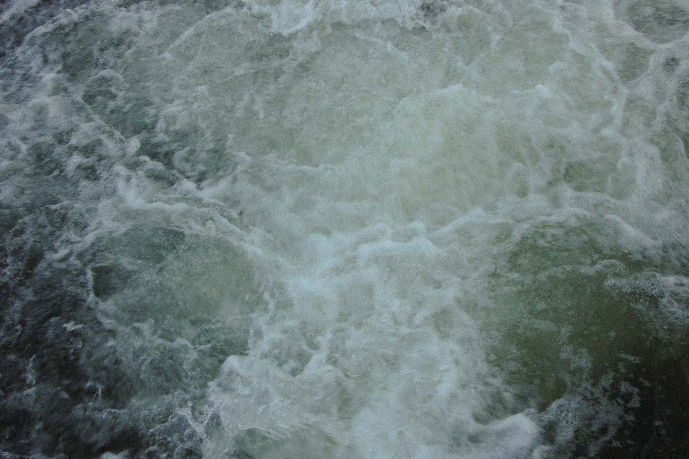
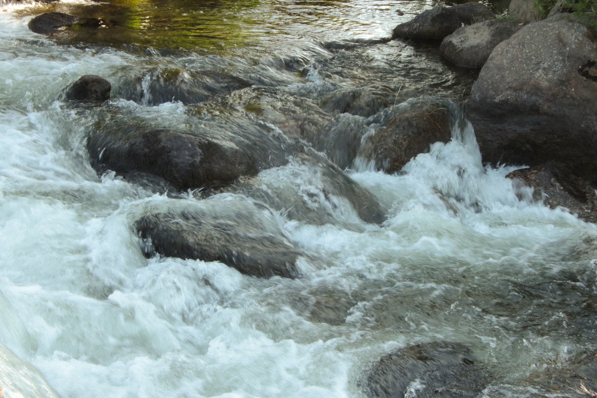
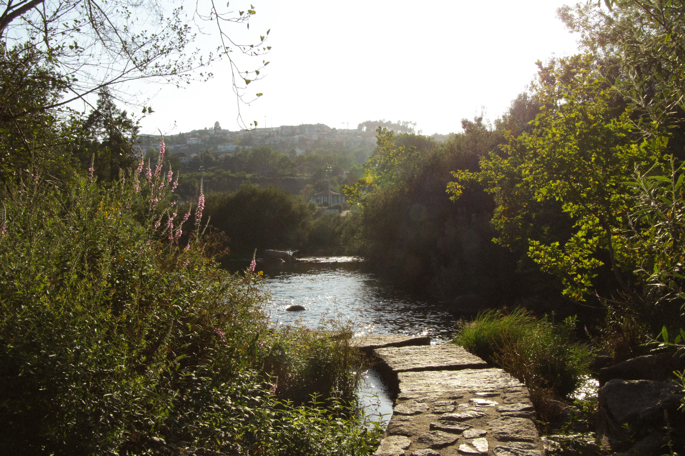
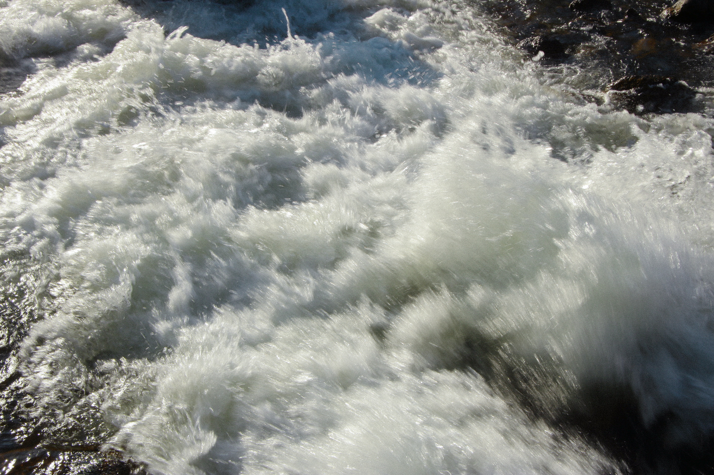
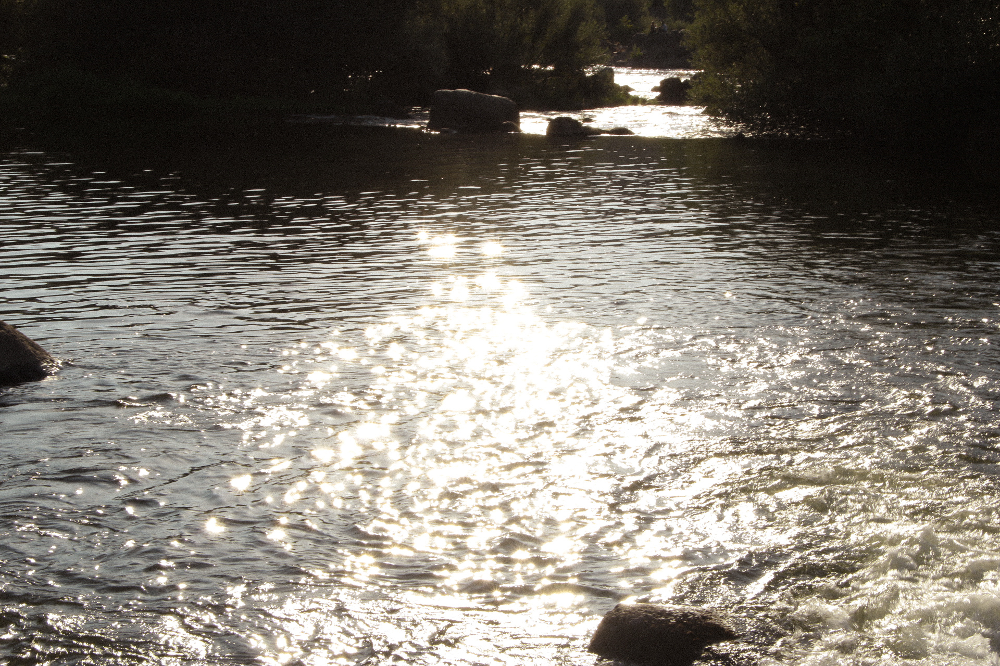
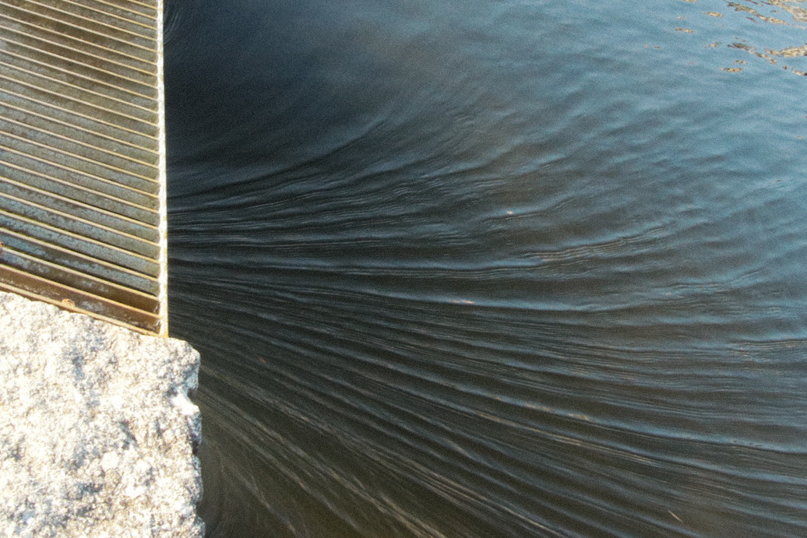
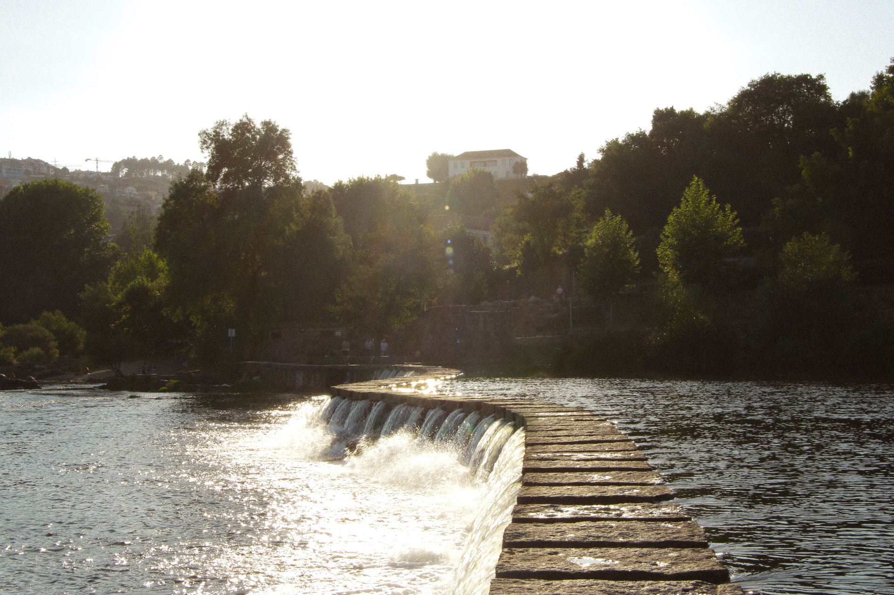

Aqua is a photography project focused on the sensitive observation of river water, not only as a natural element, but as a symbol of movement, passage and transformation.
More than documenting a landscape, this project is a visual study of texture, light and rhythm. The photographs explore the relationship between the natural and the abstract, showing how water can take on different expressions depending on the frame, the light or the moment.
The river water, always in flow, served as a metaphor for the creative process itself: constant, unpredictable, alive.






